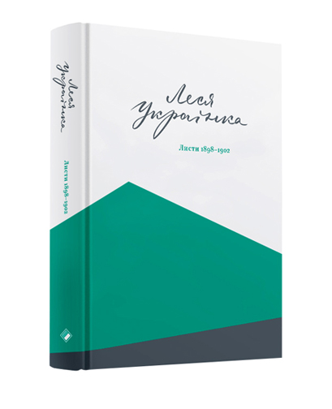

* ESC - закрити вікно пошуку
Добірки
9 книжок від композиторки Алли Загайкевич
18 жовтня 2017Бачите помилку в тексті — виділяйте фрагмент та тисніть Ctrl + Enter
Леся
Леся Українка – козирна дама у роздачі «наш повнокровний модернізм»: якщо у нас була авторка такого рівня, то українському модернізму годі закинути неповноту або ж слабкість. У цих перегонах аргументів і докладному аналізі поетики «нашої Лесі» дослідники впадають у крайнощі: або не бачать за творами живої людини, або вірять в те, що «Леся Українка – просто хвора жінка, яка хотіла любові». Однак досліджуючи біографію, завжди варто дотримуватися human first принципу: йдеться не про письменників, які також були трішки людьми, а про людей, які писали, перетворюючи власні переживання, враження і навіть прочитані чужі книжки на тексти.
Листи
«Леся Українка. Листи 1898–1902» – другий том листування письменниці з її сучасниками (у першому томі вміщено листи 1876–1897 років), що охоплює, напевне, найбурхливіший період життя Лесі Українки. За ці п’ять років вона переживає смерть коханого Сергія Мержинського, пише блискучу драму «Одержима» (1901), відвідує Берлін, Сан-Ремо, Ялту, Одесу, має низку нападів хвороби, активно листується з Ольгою Кобилянською, Агатангелом Кримським, Михайлом Грушевським, Іваном Франком, Сергієм Єфремовим. Трансформується і стиль письменниці: після наївно-романтичної «Блакитної троянди» письменниця створює трагічну, зрілу драму «Одержима», яку, до речі, було написано протягом однієї ночі біля ліжка смертельно хворого Сергія Мержинського.
У «Листах 1898–1902» також вміщено колекцію портретів Лесі Українки, її друзів та родичів, фотографії будинків, пейзажів і навіть автографи листування. Також вперше повний епістолярій цього періоду подано без купюр, а уривки, раніше вилучені цензурою, виділено курсивом. Таким чином читач може порівняти «канонічно-прометеївську» версію життя Лесі Українки із повними даними й побачити, як працює репресивний інструментарій ідеології. Адже у листах, так само як на фотографіях пізніше розстріляних партійців, «шкідливі» прізвища витирали, а суперечливі уривки «губилися» у процесі передруковування автографів.
Життя в уривках
Серед таких вилучених уривків, наприклад, окремі подробиці хвороби Лесі Українки та захворювань, на які страждали її родичів: «Я так і думала, що то дійде до такої істерії, — в нашій родині трудно не дійти до гострого стану, маючи вже завдаток на нервову слабість зроду….», «Сподіваюсь, що може їй доктор чим небудь спинить ту животову лихорадку (воно найбільш на лихорадку похоже). У всякім разі сподіваюсь собі з того всього нового припадку, бо й так ще не зовсім прийшла в себе, то не можу обьективно відноси тись ні до слабости Оксаниної, ні до її звичайного при слабости тону (ти памьятаєш, як то нас діймало часом при скарлатині?)». Напевне, в уявленні радянської цензури хвороби – це неприпустима слабкість, не притаманна «вічним революціонерам» і «дочкам Прометея».
Інтертекстуальність листів цього часу захоплює: якщо раніше юна Лариса Косач більше описувала власні відчуття, переживання і побутові ситуації, то тепер авторка сміливо поєднує німецькі цитати. словосполучення.
Світ через образи
Втім, такий колаж не розпадається на окремі частини, оскільки більшість листів мають струнку структуру. Думка письменниці плине вільно, а ерудиція дозволяє гратися зі стилями та сюжетами, тож складається враження, ніби ми підглядаємо за імпровізацією віртуозного музиканта.
Почасти у листи прослизають родинні прізвиська та розмовні вирази, що ними послуговувались у родині Косачів: гуси – жартівливе назвисько молодших сестер Лесі Українки, уліти – літературні твори, що пишуться дуже повільно, лиси – так письменниця називала галичан. Ця приватна і неймовірно емоційна говірка, можливо, розчарує тих, хто вірить, що Леся Українка все життя писала високим літературним стилем, який з листів, драм і публіцистики можна одразу переміщувати у правопис, щоб ілюструвати зразкове вживання дієприкметникових зворотів та складнопідрядних речень. Однак для решти читачів образ письменниці стане об’ємнішим і ближчим: коли читаєш ніжні листи до «хтосічки» (Ольги Кобилянської), краще розумієш, як формувалися Лесині стосунки з близькими і як письменниця ці взаємини омовлювала.
З-поміж критичного інструментарію, який варто було б застосувати до листів Лесі Українки, – не лише гендерне прочитання, а й порівняно новий напрямок історії побуту – історію відчуттів. Як на листування межі століть, епістолярій Лесі Українки – напрочуд сміливий. Вона не боїться описувати особисті переживання – страх, відчай, сподівання, нудьгу. І робить це щиро, безпосередньо, без Франкового пафосу подвижництва, посиленого патріотизму Павлика та Пчілкової повчальності. У листі Ользі Кобилянській письменниця просто, без риторичних формул зізнається, що важко переживає смерть Мережинського:
«Сьогодня як раз девьятий день по смерти мого друга, вже тиждень, як він лежить в землі. А я, бачите, жива, хоч не знаю, як сказати, — здорова, чи ні? Хвороби жадної не маю, та голова на плечах наче не моя, не слухають мене руки і дуже неохочо беруться до роботи. Нічого мені не хочеться, нічого мені не треба, я примушую себе хотіти і вмовляю, ніби те чи инше потрібне мені».
Крім листів, ретельно упорядкованих Валентиною Прокіп, видання містить низку фотографій. На них Леся Українка – молода красива жінка у модних сукнях, намисті й капелюшках, поруч з родичами, подругами й сестрами, на тлі моря, будинків та в інтер’єрах. Саме такою вона хотіла запам’ятатися нащадкам – сильною, красивою жінкою fin de siècle. Вірною собі у житті та на письмі.
Читати
- Тим, хто вірить в силу українського модернізму
- Поціновувачам тонкої еротики
- Запиваючи портвейном
- І розглядаючи разом із читанням фотографії
Не читати
- Ханжам
- Тим, хто вважає, що чужі листи читати неетично
- Коли хворієш
Ще більше цікавого для вас
Підтримайте проект
Фондуючи незалежну редакцію Читомо, ви допомагаєте зростити нове покоління
професіоналів видавничої справи і збільшуєте кількість хороших книжок у світі.